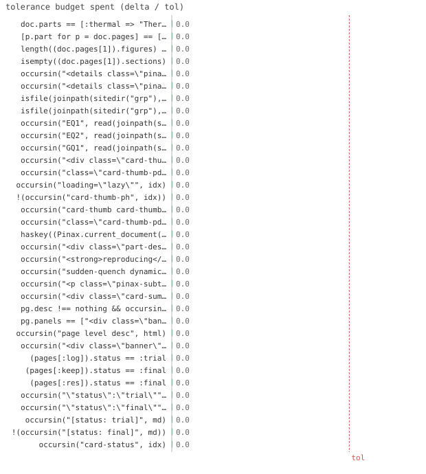

35/35 passed · 1.48s
| id | label | got | want | Δ vs tol (kind) | |
|---|---|---|---|---|---|
| ✓ | t413 | doc.parts == [:thermal => "Thermal", :quench => "Quench"] @ test_hierarchy.jl:29 code | 1.0 | 1.0 | 0.0 vs 0.5 (abs) |
| ✓ | t414 | [p.part for p = doc.pages] == [:thermal, :thermal, :quench] @ test_hierarchy.jl:30 code | 1.0 | 1.0 | 0.0 vs 0.5 (abs) |
| ✓ | t415 | length((doc.pages[1]).figures) == 1 @ test_hierarchy.jl:32 code | 1.0 | 1.0 | 0.0 vs 0.5 (abs) |
| ✓ | t416 | isempty((doc.pages[1]).sections) @ test_hierarchy.jl:33 code | 1.0 | 1.0 | 0.0 vs 0.5 (abs) |
| ✓ | t417 | occursin("<details class=\"pinax-group\" open><summary>Thermal", idx) @ test_hierarchy.jl:49 code | 1.0 | 1.0 | 0.0 vs 0.5 (abs) |
| ✓ | t418 | occursin("<details class=\"pinax-group\" open><summary>Quench", idx) @ test_hierarchy.jl:50 code | 1.0 | 1.0 | 0.0 vs 0.5 (abs) |
| ✓ | t419 | isfile(joinpath(sitedir("grp"), "energy.html")) @ test_hierarchy.jl:52 code | 1.0 | 1.0 | 0.0 vs 0.5 (abs) |
| ✓ | t420 | isfile(joinpath(sitedir("grp"), "dqt.html")) @ test_hierarchy.jl:53 code | 1.0 | 1.0 | 0.0 vs 0.5 (abs) |
| ✓ | t421 | occursin("EQ1", read(joinpath(sitedir("num"), "energy.html"), String)) @ test_hierarchy.jl:80 code | 1.0 | 1.0 | 0.0 vs 0.5 (abs) |
| ✓ | t422 | occursin("EQ2", read(joinpath(sitedir("num"), "cv.html"), String)) @ test_hierarchy.jl:81 code | 1.0 | 1.0 | 0.0 vs 0.5 (abs) |
| ✓ | t423 | occursin("GQ1", read(joinpath(sitedir("num"), "dqt.html"), String)) @ test_hierarchy.jl:82 code | 1.0 | 1.0 | 0.0 vs 0.5 (abs) |
| ✓ | t424 | occursin("<div class=\"card-thumb\"><img src=", idx) @ test_hierarchy.jl:103 code | 1.0 | 1.0 | 0.0 vs 0.5 (abs) |
| ✓ | t425 | occursin("class=\"card-thumb-pdf\"", idx) @ test_hierarchy.jl:104 code | 1.0 | 1.0 | 0.0 vs 0.5 (abs) |
| ✓ | t426 | occursin("loading=\"lazy\"", idx) @ test_hierarchy.jl:105 code | 1.0 | 1.0 | 0.0 vs 0.5 (abs) |
| ✓ | t427 | !(occursin("card-thumb-ph", idx)) @ test_hierarchy.jl:106 code | 1.0 | 1.0 | 0.0 vs 0.5 (abs) |
| ✓ | t428 | occursin("card-thumb card-thumb-empty", idx) @ test_hierarchy.jl:107 code | 1.0 | 1.0 | 0.0 vs 0.5 (abs) |
| ✓ | t429 | occursin("class=\"card-thumb-pdf\"", idx) @ test_hierarchy.jl:127 code | 1.0 | 1.0 | 0.0 vs 0.5 (abs) |
| ✓ | t430 | haskey((Pinax.current_document()).part_descs, :thermal) @ test_hierarchy.jl:142 code | 1.0 | 1.0 | 0.0 vs 0.5 (abs) |
| ✓ | t431 | occursin("<div class=\"part-desc\">", idx) @ test_hierarchy.jl:144 code | 1.0 | 1.0 | 0.0 vs 0.5 (abs) |
| ✓ | t432 | occursin("<strong>reproducing</strong>", idx) @ test_hierarchy.jl:145 code | 1.0 | 1.0 | 0.0 vs 0.5 (abs) |
| ✓ | t433 | occursin("sudden-quench dynamics", idx) @ test_hierarchy.jl:146 code | 1.0 | 1.0 | 0.0 vs 0.5 (abs) |
| ✓ | t434 | occursin("<p class=\"pinax-subtitle\">スイープ: χ</p>", a) @ test_hierarchy.jl:159 code | 1.0 | 1.0 | 0.0 vs 0.5 (abs) |
| ✓ | t435 | occursin("<div class=\"card-summary\">スイープ: χ</div>", idx) @ test_hierarchy.jl:161 code | 1.0 | 1.0 | 0.0 vs 0.5 (abs) |
| ✓ | t436 | pg.desc !== nothing && occursin("page level desc", pg.desc.source) @ test_hierarchy.jl:172 code | 1.0 | 1.0 | 0.0 vs 0.5 (abs) |
| ✓ | t437 | pg.panels == ["<div class=\"banner\">hi</div>"] @ test_hierarchy.jl:173 code | 1.0 | 1.0 | 0.0 vs 0.5 (abs) |
| ✓ | t438 | occursin("page level desc", html) @ test_hierarchy.jl:175 code | 1.0 | 1.0 | 0.0 vs 0.5 (abs) |
| ✓ | t439 | occursin("<div class=\"banner\">hi</div>", html) @ test_hierarchy.jl:176 code | 1.0 | 1.0 | 0.0 vs 0.5 (abs) |
| ✓ | t440 | (pages[:log]).status == :trial @ test_hierarchy.jl:198 code | 1.0 | 1.0 | 0.0 vs 0.5 (abs) |
| ✓ | t441 | (pages[:keep]).status == :final @ test_hierarchy.jl:199 code | 1.0 | 1.0 | 0.0 vs 0.5 (abs) |
| ✓ | t442 | (pages[:res]).status == :final @ test_hierarchy.jl:200 code | 1.0 | 1.0 | 0.0 vs 0.5 (abs) |
| ✓ | t443 | occursin("\"status\":\"trial\"", j) @ test_hierarchy.jl:204 code | 1.0 | 1.0 | 0.0 vs 0.5 (abs) |
| ✓ | t444 | occursin("\"status\":\"final\"", j) @ test_hierarchy.jl:205 code | 1.0 | 1.0 | 0.0 vs 0.5 (abs) |
| ✓ | t445 | occursin("[status: trial]", md) @ test_hierarchy.jl:207 code | 1.0 | 1.0 | 0.0 vs 0.5 (abs) |
| ✓ | t446 | !(occursin("[status: final]", md)) @ test_hierarchy.jl:208 code | 1.0 | 1.0 | 0.0 vs 0.5 (abs) |
| ✓ | t447 | occursin("card-status", idx) @ test_hierarchy.jl:213 code | 1.0 | 1.0 | 0.0 vs 0.5 (abs) |

⤓ downloadPinax.reset!()
doc = Pinax.current_document()
@test doc.parts == [:thermal => "Thermal", :quench => "Quench"]@test [p.part for p in doc.pages] == [:thermal, :thermal, :quench]@test length(doc.pages[1].figures) == 1@test isempty(doc.pages[1].sections)Pinax.reset!()
idx = read(Pinax.render(; out=sitedir("grp")), String)
@test occursin("<details class=\"pinax-group\" open><summary>Thermal", idx)@test occursin("<details class=\"pinax-group\" open><summary>Quench", idx)@test isfile(joinpath(sitedir("grp"), "energy.html"))@test isfile(joinpath(sitedir("grp"), "dqt.html"))nb(kind, c) =
if kind === :page
(c.part_id === :thermal ? "EQ$(c.page)" : "GQ$(c.page)")
elseif kind === :figure
"Fig. $(c.figure)"
else
"($(c.equation))"
end
Pinax.reset!(; numbering=:part, numberer=nb)
Pinax.render(; out=sitedir("num"))
@test occursin("EQ1", read(joinpath(sitedir("num"), "energy.html"), String))@test occursin("EQ2", read(joinpath(sitedir("num"), "cv.html"), String))@test occursin("GQ1", read(joinpath(sitedir("num"), "dqt.html"), String)) # reset per partpdf = joinpath(tmp, "p.pdf")
write(pdf, "%PDF-1.4\n%stub\n")
Pinax.reset!()
idx = read(Pinax.render(; out=sitedir("thumb")), String)
@test occursin("<div class=\"card-thumb\"><img src=", idx) # raster figure → img@test occursin("class=\"card-thumb-pdf\"", idx) # PDF first-figure mini-preview@test occursin("loading=\"lazy\"", idx) # only visible cards load@test !occursin("card-thumb-ph", idx) # no glyph placeholder anymore@test occursin("card-thumb card-thumb-empty", idx) # no-figure page + opt-out → emptypdf = joinpath(tmp, "q.pdf")
write(pdf, "%PDF-1.4\n%stub\n")
Pinax.reset!()
out = sitedir("bm")
mkpath(out)
cf = joinpath(out, "comments.toml")
write(cf, "[bookmark]\nbm_fig2 = true\n") # bookmark the 2nd (PDF) figure of :bm
idx = read(Pinax.render(; out=out, comments_file=cf), String)
# the only PDF in the doc is :bm's fig2; a PDF preview proves the bookmark beat the first (svg) figure
@test occursin("class=\"card-thumb-pdf\"", idx)Pinax.reset!()
@test haskey(Pinax.current_document().part_descs, :thermal)idx = read(Pinax.render(; out=sitedir("pd")), String)
@test occursin("<div class=\"part-desc\">", idx)@test occursin("<strong>reproducing</strong>", idx) # markdown rendered@test occursin("sudden-quench dynamics", idx)Pinax.reset!()
Pinax.render(; out=sitedir("sub"))
a = read(joinpath(sitedir("sub"), "a.html"), String)
@test occursin("<p class=\"pinax-subtitle\">スイープ: χ</p>", a) # on the pageidx = read(joinpath(sitedir("sub"), "index.html"), String)
@test occursin("<div class=\"card-summary\">スイープ: χ</div>", idx) # on the cardPinax.reset!()
pg = Pinax.current_document().pages[1]
@test pg.desc !== nothing && occursin("page level desc", pg.desc.source)@test pg.panels == ["<div class=\"banner\">hi</div>"]html = read(Pinax.render(; out=sitedir("leaf")), String) # single page → one index.html
@test occursin("page level desc", html)@test occursin("<div class=\"banner\">hi</div>", html)tmp = mktempdir()
Pinax.reset!(; title="status")
pages = Dict(p.id => p for p in Pinax.current_document().pages)
@test pages[:log].status == :trial # inherited from the part@test pages[:keep].status == :final # explicit override wins@test pages[:res].status == :final # default outside any partap = Pinax.render(; out=joinpath(tmp, "agent"), theme=:agent)
j = read(ap, String)
@test occursin("\"status\":\"trial\"", j)@test occursin("\"status\":\"final\"", j)md = read(joinpath(tmp, "agent", "agent.md"), String)
@test occursin("[status: trial]", md) # trial page marked@test !occursin("[status: final]", md) # default not noised upidx = read(
joinpath(Pinax.render(; out=joinpath(tmp, "site")) |> dirname, "index.html"), String
)
@test occursin("card-status", idx) # gallery badges the trial page{kind=link}